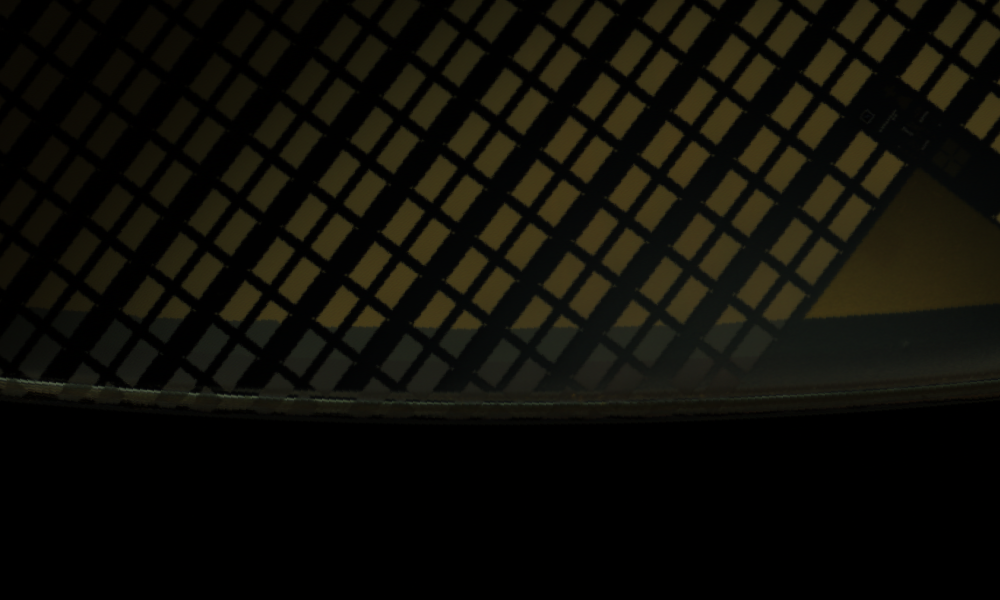
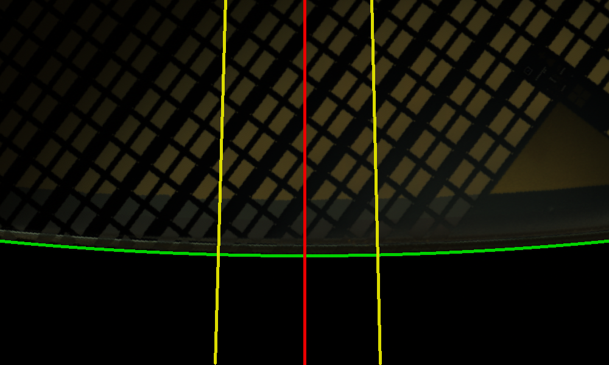

These colored lines are the frozen detector geometry, not truth labels. Compare whether the lines land on the visible notch edges, then compare the physical shapes across all three columns and both channels.
green: fitted wafer perimeter
yellow: frozen candidate interval bounds
red: frozen candidate center ray
Brightfield — compare all three overlays together
Drag opacity to cross-fade each colored overlay against its own clean crop. Open Clean or Overlay in a new tab for full native pixels.
S16-C1 · BFwidth 0.5°
center 179.1363°
S17-C1 · BFwidth 6.4°
center 88.0922°
S17-C2 · BFwidth 3.4°
center 80.5667°
Darkfield — independent channel check
The DF geometry is channel-local. Agreement or disagreement with BF is evidence for your visual classification, not an automatic pass.
S16-C1 · DFwidth 0.8°
center 178.8969°
S17-C1 · DFwidth 3.4°
center 88.8208°
S17-C2 · DFwidth 3.0°
center 81.7669°


Suggested human checks: (1) does each yellow interval bracket the physical indentation, (2) does the red ray pass through its apparent center, (3) do BF and DF describe the same physical feature, and (4) are S17-C1 and S17-C2 two manufactured notch shapes, or is either one a lookalike/chipout/other edge feature?